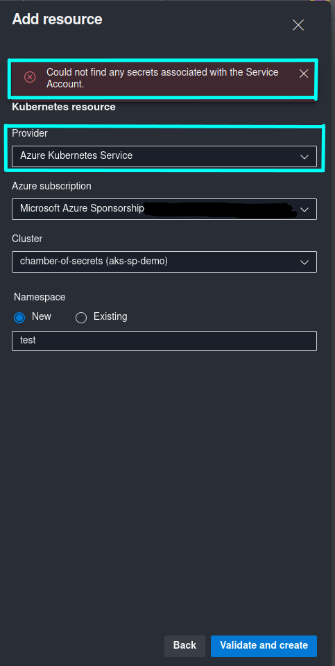
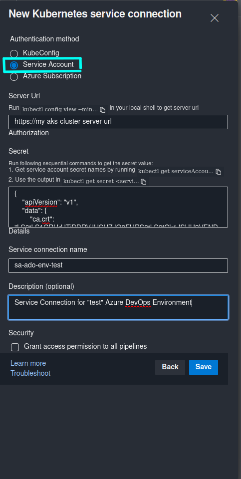
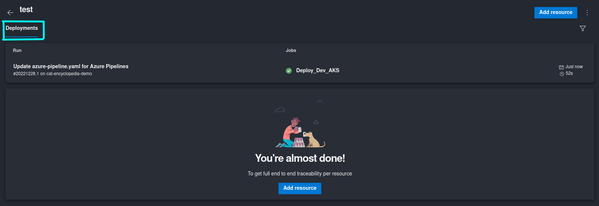
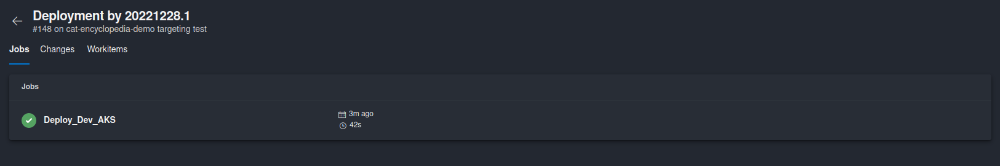
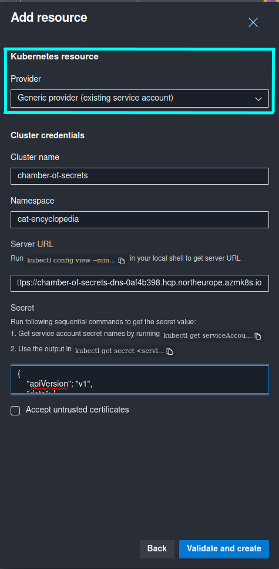
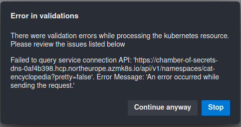

How to Fix ServiceAccount Error in Azure DevOps Environments for Kubernetes Clusters V.1.24 and Newer
Introduction of the issue
[Update July 2023] This issue has been resolved and you should be able to create a Kubernetes resource targeting Azure Kubernetes Service in Azure DevOps Environments in the same way as before. Official documentation has been updated with additional details: Kubernetes resource
With release of Kubernetes version 1.24 a new feature gate has come to life which is called LegacyServiceAccountTokenNoAutoGeneration, and it is enabled by default. What this feature does is that Secret API objects containing service account tokens are no longer auto-generated for every ServiceAccount. You can read more details about this change in release notes: CHANGELOG-1.24
This is a breaking change that is applicable if you attempt to create Azure Kubernetes Service Resources in Azure DevOps Environments that target AKS clusters with version 1.24 or newer. You will see Could not find any secrets associated with the Service Account error message during creation of a new AKS Resource, as shown in the screenshot below:

What is unfortunate is that you can’t get around this issue as long as you’re attempting to create an Azure Kubernetes Service Resource. I’ve tried multiple approaches by, for example, creating a Secret manually for the ServiceAccount that was generated by Azure DevOps… but every time you click Validate and create, Azure DevOps will generate a new ServiceAccount for the same Resource, even if you haven’t refreshed the page. Another approach that I have tried was to create everything programmatically by calling Azure DevOps REST API, but what I have learned the hard way is that you can’t add or update ServiceAccount Secret through REST API either, even if you attempt to update an already existing Resource. This has been quite frustrating to say the least, but I have found a solution that has worked nicely for me and hopefully can help you as well, so that you don’t need to struggle by fixing this issue as long as I did. 😺
Issue resolution approaches
So, how can you fix this error and still use Azure DevOps Environments with Kubernetes Resources? 🧐
Use Azure DevOps Environment without Kubernetes Resources and deploy with manually created Kubernetes Service Connection
In this case you still use Azure DevOps Environment for deployment and change history tracking, but you’re not creating any Kubernetes Resources so your ADO Environment is empty. In order to perform actual deployment to the AKS cluster you will need to create a Kubernetes Service Connection in Azure DevOps manually. In order for the service connection to work you can only use type KubeConfig or Service Account. Azure Subscription service connection type will still fail, because the behaviour in this scenario will be the same as in creation of an Azure DevOps Environment AKS Resource where Azure DevOps attempts to generate a ServiceAccount automatically.
If you don’t have a ServiceAccount with cluster-admin permissions in the namespace that you want to deploy to, I’ve provided templates in my GitHub repo that you can use in order to create a ServiceAccount, a RoleBinding that provides ServiceAccount cluster-admin permissions in the namespace that you want to deploy your application to, and a ServiceAccount Secret that will be used in order to communicate to the cluster’s API server. Azure DevOps requires this secret for workload deployment. All templates mentioned above can be found here: ado-environments/templates. You will need to update placeholders with proper values for your use case.
I would recommend to create a Kubernetes service connection of type Service Account in order to limit service connection usage to the ServiceAccount with permissions scoped only to your workload’s namespace instead of the whole cluster.
In order to create a Kubernetes service connection of type Service Account you will need to provide a Kubernetes cluster server URL and a ServiceAccount Secret Object in JSON format.
You can retrieve AKS cluster server URL with (az aks show --name <aks_cluster_name> --resource-group <aks_cluster_resource_group_name> | ConvertFrom-Json).fqdn and prefix it with https://, as shown in the example below.
You can retrieve ServiceAccount Secret with kubectl get secret <service_account_secret_name> -n <resource_namespace> -o json - please remember to copy the whole Secret Object JSON output, including starting and ending curly brackets, like this:
PS /home> kubectl get secret azdev-sa-98f25-token -n cat-encyclopedia -o json
{
"apiVersion": "v1",
"data": {
"ca.crt": "REDACTED",
"namespace": "REDACTED",
"token": "REDACTED"
},
"kind": "Secret",
"metadata": {
"annotations": {
# OMITTED
},
"creationTimestamp": "2022-12-26T18:37:14Z",
"name": "azdev-sa-98f25-token",
"namespace": "cat-encyclopedia",
"resourceVersion": "704824",
"uid": "d686b9f6-79c9-43a3-8df5-1b3743b20a09"
},
"type": "kubernetes.io/service-account-token"
}
Once the required values are retrieved, in Azure DevOps -> Project Settings -> Service connections you can create a new Kubernetes Service Connection of type Service Account with values that were retrieved in the above step:

Finally, in your Deployment Job in Azure Pipelines you can still target the Azure DevOps Environment of your choice, but instead of providing a Kubernetes Resource that you normally create in the respective ADO Environment for workload deployment to Kubernetes, you will need to provide a Kubernetes service connection that was created above as part of the deployment task:
- stage: Deploy_Dev
dependsOn:
- Build
jobs:
- deployment: Deploy_Dev_AKS
pool:
vmImage: 'ubuntu-latest'
environment: test # Provide Azure DevOps Environment name
strategy:
runOnce:
deploy:
steps:
# REST OF THE CODE IS OMITTED
- task: HelmDeploy@0
displayName: 'Deploy cat-encyclopedia'
inputs:
connectionType: 'Kubernetes Service Connection' # Provide service connection type
kubernetesServiceConnection: 'sa-ado-env-test' # Provide service connection name
command: upgrade
namespace: 'cat-encyclopedia'
releaseName: 'cat-encyclopedia'
chartType: FilePath
chartPath: $(Pipeline.Workspace)/helm/cat-encyclopedia-1.0.0.tgz
arguments: '--install --timeout 2m'
Once you’ve updated the deployment job, your workloads will be deployed to a Kubernetes cluster as before. The only change in this case is that you will not be able to see any information about your deployment in Azure DevOps Environment. Information like Pod logs, Deployment metadata and state will not be availabled and you will not be able to define additional pre-deployment policies on the ADO Environment Resource level (you will still be able to define policies on the Environment level though).
If you’re getting
Error: Kubernetes cluster unreachable: Get "https://<kubernetes-cluster-server-url>/version": x509: certificate signed by unknown authorityduring deployment, it means that your cluster is using default self-signed certificates which are generated by an untrusted certificate authority. You can bypass this by adding--kube-insecure-skip-tls-verifyargument if you’re deploying through Helm or--insecure-skip-tls-verifyif you’re deploying with kubectl build tasks likeKubernetesManifest@0. Please note that this is NOT RECOMMENDED in production scenarios since your HTTPS connections to Kubernetes cluster server will not be validated. You need to ensure that your production clusters are using trusted certificate authority for generating TLS certificates, for example by using Custom CA.


Due to the limitation mentioned above I would recommend approach #2 for which I have also created a script in order to automate the whole process. 😼
Use Azure DevOps Environment with Kubernetes Resource of type “Generic provider (existing service account)”
For this approach we don’t need to create a Kubernetes service connection manually. We can use both Azure DevOps Environments and Kubernetes Resources as before, with one minor difference - we need to create Kubernetes Resource of type Generic provider (existing service account) instead of Azure Kubernetes Service.
The initial steps are the same as in approach #1: you need to create a ServiceAccount with respective Secret and RoleBinding, retrieve cluster server URL and ServiceAccount Secret Object JSON. In addition you will need to provide Namespace that you want the Resource to be deployed to, and Kubernetes cluster name. This time you will need to provide this information when creating a Kubernetes Resource in the Azure DevOps Environment of your choice, like it’s shown in the screenshot below:

If you’re getting following error during creation of a Kubernetes Resource:

It means that your cluster is using default self-signed certificates which are generated by an untrusted certificate authority. You can bypass this by checking Accept untrusted certificates option that you can see in the screenshot above. Please note that this is NOT RECOMMENDED in production scenarios since your HTTPS connections to Kubernetes cluster server will not be validated. You need to ensure that your production clusters are using trusted certificate authority for generating TLS certificates, for example by using Custom CA. You can also choose to continue anyway but in that case you will not be able to see any information about the Deployment that must be retrieved from the cluster, like Pod Logs or Deployment metadata. You will only be able to see deployment history and set pre-deployment policies on the Resource level.
Once a Kubernetes Resource of type Generic provider (existing service account) is created, you can use Azure DevOps Environments just as you did before the breaking change. By following this approach you will be able to see the Resource information related to the currently active Deployment in Azure DevOps, for exampl Pod logs, Deployment metadata, etc. - just as if you have created a regular AKS Resource. You will also be able to define additional policies and checks on the Resource level. If you’re not sure about how to deploy to Kubernetes with Azure DevOps Environments, you can check out my earlier blog posts that provide more details on this topic:
🐱 Continuous Delivery to AKS with Azure DevOps Environments - Part 1
🐱 Continuous Delivery to AKS with Azure DevOps Environments - Part 2
Automate creation of Kubernetes Resource of type “Generic provider (existing service account)
In order to make implementation of approach #2 faster and minimize amount of manual steps, I’ve created a PowerShell script that you can run in order to automatically create a Kubernetes Resource of type “Generic provider (existing service account) in the Azure DevOps Environment of your choice. This script will automatically create ServiceAccount with RoleBinding and Secret in the respective Kubernetes Namespace.
You can find the script in my GitHub repo: New-ADO-K8s-Resource.ps1
In order to create an ADO Environment Generic Kubernetes Resource you can run the script like this:
./New-ADO-K8s-Resource.ps1 -AccessToken "<azure_devops_pat>" -AzureDevOpsUrl "https://dev.azure.com/<organization_name>/<project_name>" -EnvironmentName "<azure_devops_environment_name>" -KubernetesClusterName "<kubernetes_cluster_name>" -KubernetesResourceNamespace "<application_namespace_in_kubernetes_cluster>" -KubernetesClusterUrl "https://<kubernetes_cluster_server_url>"
If you want to create multiple resources in the same Azure DevOps Environment you can create a list of Namespaces that the Resources are targeting and run the script for each of the Namespaces in the list:
$resourceNamespaces = @("test-ns-1", "test-ns-2")
foreach ($namespace in $resourceNamespaces)
{
./New-ADO-K8s-Resource.ps1 -AccessToken "<azure_devops_pat>" -AzureDevOpsUrl "https://dev.azure.com/<organization_name>/<project_name>" -EnvironmentName "<azure_devops_environment_name>" -KubernetesClusterName "<kubernetes_cluster_name>" -KubernetesResourceNamespace $namespace -KubernetesClusterUrl "https://<kubernetes_cluster_server_url>"
}
That’s it for now - Thanks for reading and till next tech tip 😼